Java Editor
 Quick fix to change project compliance and JRE to 1.8
Quick fix to change project compliance and JRE to 1.8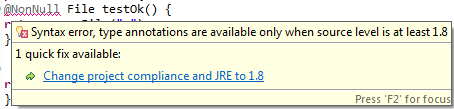
Migrate anonymous class creations to lambda expressions and back- Convert to lambda expression
- Convert to anonymous class creation
Before:
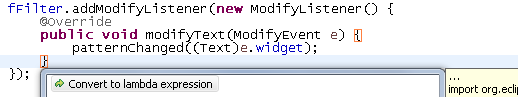
After the Quick Assist (Ctrl+1), the 6 lines are condensed into 1:
Or invoke Source > Clean Up..., use a custom profile, and on the Configure... dialog select Convert functional interface instances and Use lambda where possible on the Code Style tab. Change lambda expression body block to expression and back- Change body expression to block
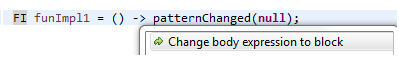
- Change body block to expression
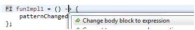
View the method implemented by the functional interface instances- '
->' in a lambda expression
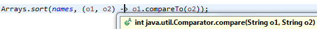' in lambda to show functional method"/>
- '
::' in a method reference
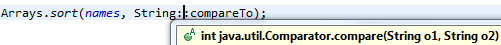
Navigate to the functional method declaration->' or '::', and click the hyperlink.
- '
->' in a lambda expression:
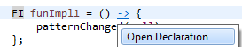
- '
::' in a method reference:
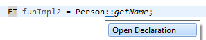
for loops that iterate over a given expression.
For arrays:
- Create an enhanced
forloop - Create a
forloop using an index

Collections:
- Create an enhanced
forloop - Create a
forloop using anIterator
Lists:
- Create a
forloop using an index andget(i)

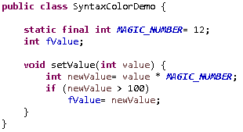
This can be disabled or configured with different colors and styles on the Java > Editor > Syntax Coloring preference page.Java Formatter
Option to control lambda code formatting- Configure the position of braces within lambda body:
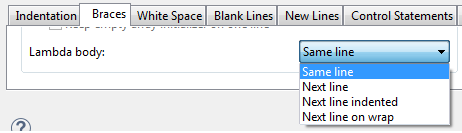
- Configure whitespace before and after the arrow operator of lambda:
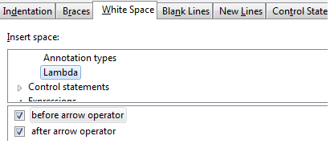
Formatter profiles can be configured on the Java > Code Style > Formatter preference page.
Java Compiler
Java 8 Option to control generation of method parameter attributes in class files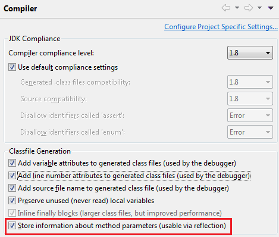
org.eclipse.jdt.launching.vmInstalls extension point.This
fact is now more recognizable:
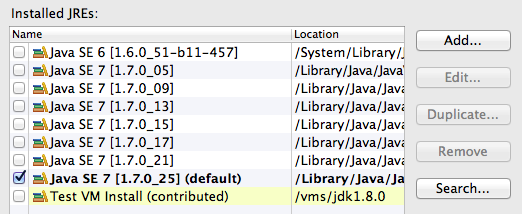
Null type annotations
This feature requires a set of nullness annotations declared with @Target({TYPE_USE}),
which JDT ships as version 2.0.0 of the
org.eclipse.jdt.annotation bundle.
With these annotations, nullness can be considered as an intrinsic part of the type system, allowing the compiler to perform null type checking along with each task of type checking. This is a major step towards systematically detecting all possible NullPointerExceptions in a program.
The most obvious benefit is in annotating type arguments of generic types:
The example shows diverse usage of null-annotated type arguments.
While most of the code has been checked to be safe, the compiler directly points out
one obvious bug: in is declared with a nullable type, and hence cannot be
passed into add() of a list of nonnull elements.
In this variant an error is detected by recognizing that string has been extracted
from a list that may contain nulls, hence passing this value into a Predicate expecting a
nonnull argument is wrong.
For a comprehensive description of type annotation based null analysis see the online help.
While potentially, the new approach could lead to an explosion of the number of annotations,
also @NonNullByDefault has become much more powerful, such that programs not using
any null values can be fully checked with just a single annotation:
The @NonNullByDefault annotation in line 7 affects most types in the example
(with the exception of local variables, which are inferred using flow analysis).
The compiler directly points out the single bug in the safe_ methods:
the type argument of list result defaults to '@NonNull String',
hence passing null to its add() method is now wrong.
In line 27 all null-defaults are canceled for the scope of method unprotectedClient().
Here we simulate the interface between un-annotated (legacy) code and code governed
by @NonNullByDefault. We can observe that all arguments and local variables
from the legacy code require unchecked conversions when being passed into the annotated code.
In particular note that myStrings lacks two annotations required by the method
safeFilter(): the List should be nonnull, and so should be its type argument.
Migrating projects using null annotations for use in LunaMain points to observe:
- Project configuration
- No matter if you are adopting null type annotations or continue to use old-style null annotations:
always refer to the
org.eclipse.jdt.annotationbundle using a suitable version range, either[1.1.0,2.0.0)for declaration annotations or[2.0.0,3.0.0)for type annotations. This is important, because Eclipse now ships with both versions of the annotation bundle.
As an alternative, OSGi/plug-in projects may use a target definition for explicitly selecting the appropriate version of the annotation bundle. - Syntax changes
- When migrating to null type annotations, your code may need to be changed if you have null annotations attached to an array type or to a qualified type reference. The latter may simply create a new compile error, while the former implicitly changes its meaning.
Information in the man file can be read by the command "man <path_to_ecj.1>" in command prompt mode.
Java Views and Dialogs
Option to fine-grain Java search to limit to method reference expressionsThis option can be configured by clicking the hyperlink next to Search > Java Search > Limit To > Match locations:
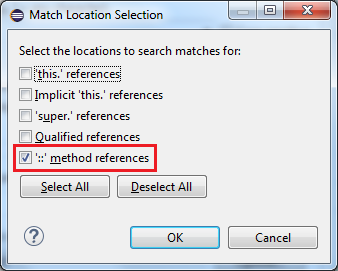
Debug
Java 8 debug support- Evaluating expressions and variables from the context of interface methods
- Java Application can now be executed from the static main method in interface (without public modifier also)
- Breakpoints can be added inside lambda expressions
For more information see the bugzilla entry.
JUnit
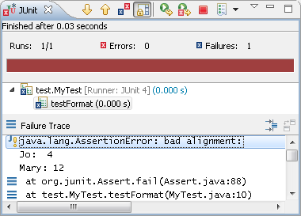